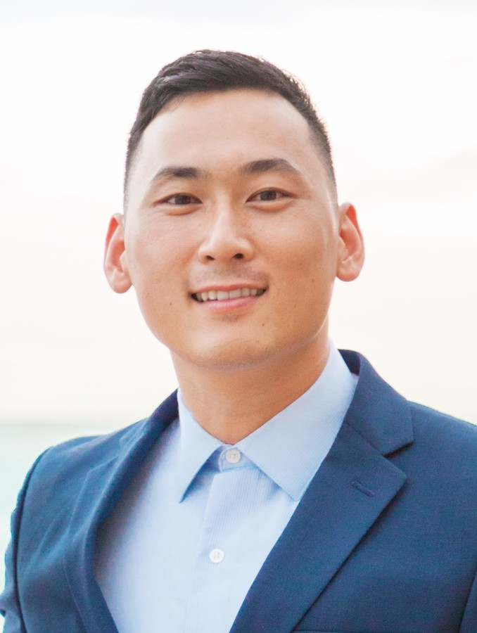

Hi I'm Jin.
A Computer Scientist
I achieved the most personal growth during my time in the military. I was thrust into a live operation with the mission of
keeping aircraft maintained and training pilots. In this collaborative environment with over 11 work centers and over 400 personnel,
I felt a sense of purpose and personal responsibility over my assigned position that I had never experienced prior. I learned to manage multiple tasks with competing priorities while supporting both
maintenance and flight operations, as well as simultaneously conducting internal and external audits to assure Naval Aviation Standard Operating Procedure compliance.
My coursework exposed me to an extensive set of programming experiences.
My foundational courses exposed me to:
-Functional and Object-Oriented Programming concepts in C/C++ and Java
-Fundamental data structures and algorithms in C++.
These courses were supplemented with more practical, hands-on courses that really helped me understand how everything fits together
-Assembly Language | Digital Logic | Computer Architecture (How Computers work from transistors, to logic gates, to hardware components)
-Data Communication and Networks (OSI model and associated protocols with each layer, client-server architecture, working with Web APIs)
-Operating Systems (How hardware interacts with software, resource allocation, memory management, multithreading, scheduling algorithms)
-Visual Programming (application development using C# scripts and the Unity Engine)
-Database Management (SQLite, MySQL, and managing big data on google cloud)
Followed up by more network and security related courses:
-Introduction to Cyber Security
-Network Implementation and Security
-Cryptography
Finishing up with highly theoretical courses:
-Programming Languages
-Compiler Construction
Two non-profit organizations that I've volunteered with are Meals on Wheels, whose mission is to assist homebound
senior residents in maintaining their independence by providing meals delivered to their homes, and the
Venice Family Clinic, whose mission is to provide vital medical services to the community. I'm grateful to have these opportunities
to engage with and make meaningful contributions to my community.
A few of the hobbies I am currently passionate about are 3-D Printing, Cycling, and playing Tennis.